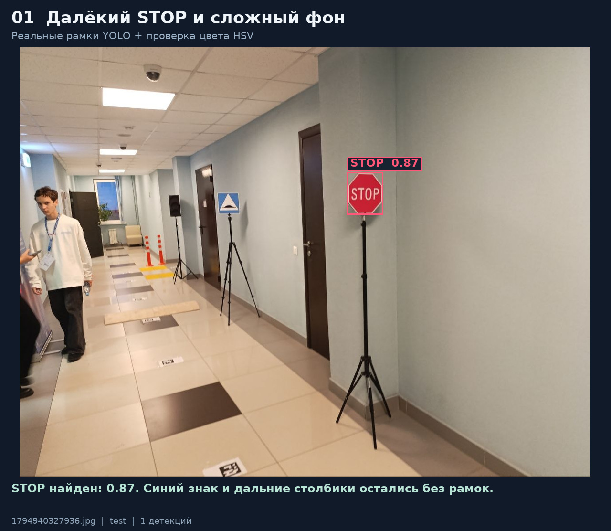
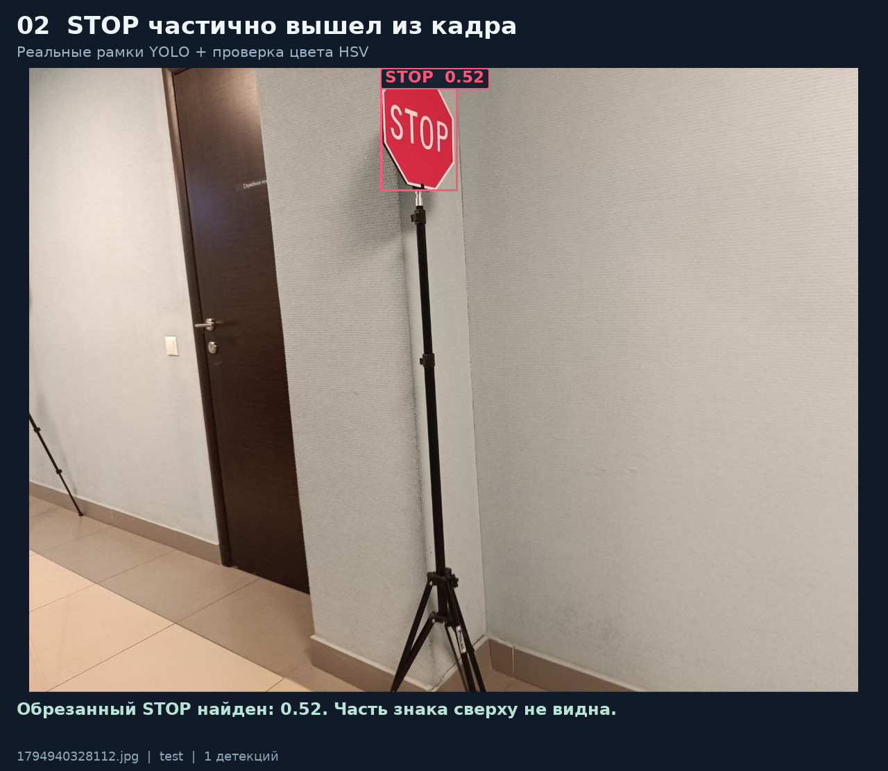
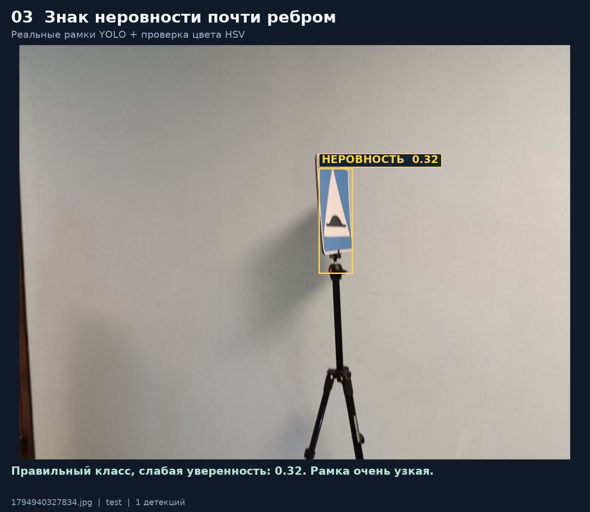
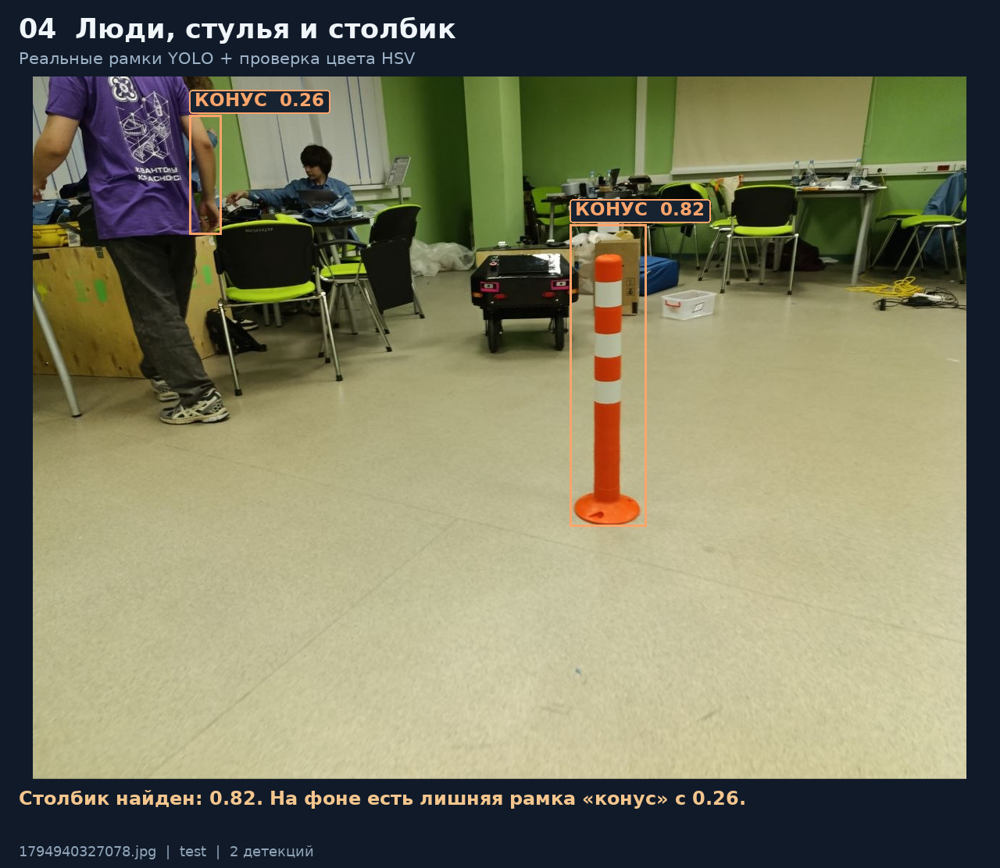
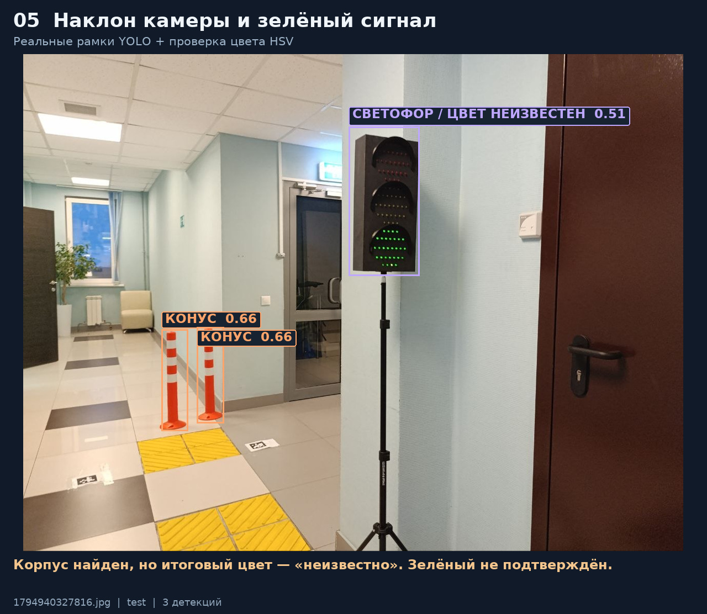
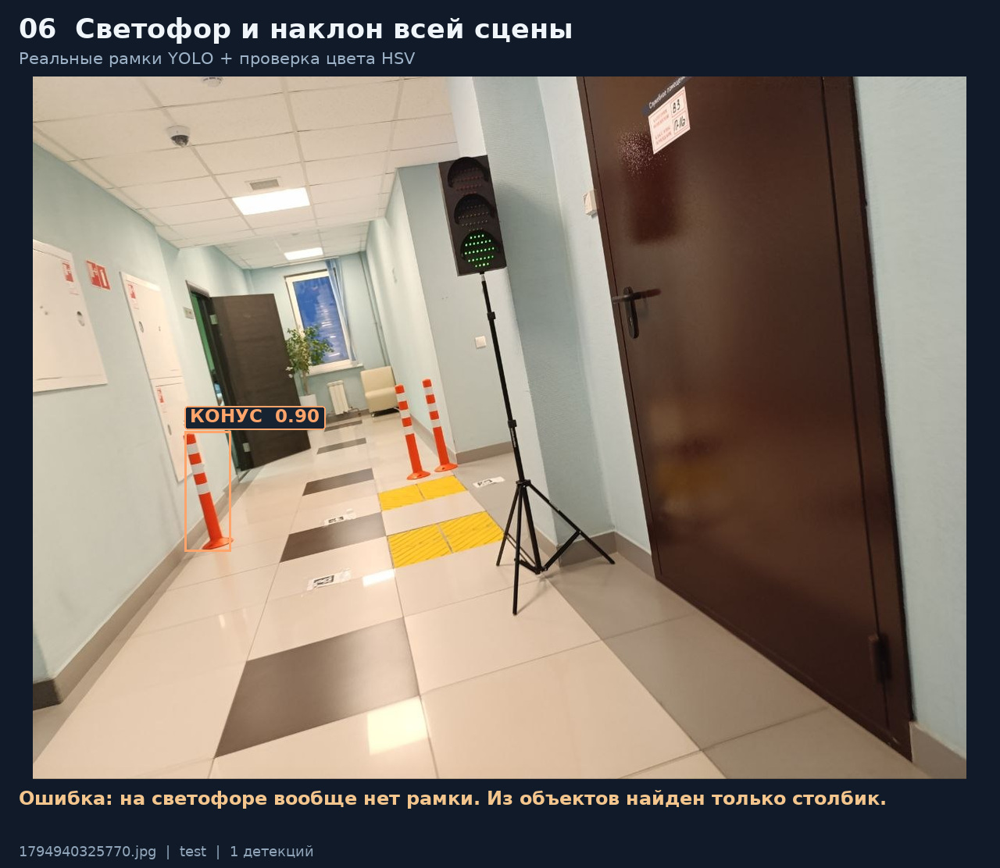

01 · Дальний STOP
STOP найден: 0.87. Другие объекты на заднем плане остались без рамок.
Шесть реальных тестовых фотографий: дальние объекты, обрезанный знак, неудобный ракурс и сложный фон. Нажми на фото, чтобы рассмотреть рамки крупно. Стрелки ← → переключают кадры, Esc закрывает просмотр.
Все 6 кадров на одном изображении ↗
STOP найден: 0.87. Другие объекты на заднем плане остались без рамок.

Часть STOP не видна, но знак найден: 0.52.

Класс определён правильно, но оценка низкая: 0.32. Речь о знаке, не о рельефе пола.

Столбик найден: 0.82. На фоне есть ошибка — лишний «конус» с оценкой 0.26.

Корпус светофора найден, итоговый цвет — «неизвестно», хотя визуально горит зелёная секция.

При наклоне сцены светофор остался совсем без рамки. Найден только столбик.